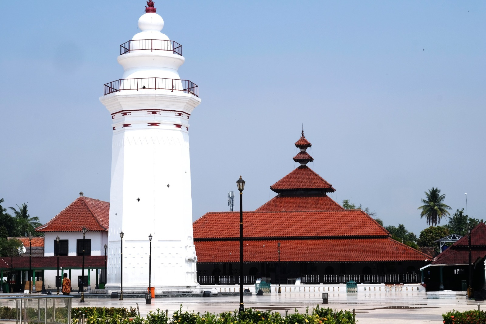

Pakaian adat pria Banten berupa baju pangsi dengan ikat kepala (iket) dan sebilah golok terselip di pinggang. Sedangkan wanitanya memakai kebaya dengan kain batik khas Banten dan selendang. Rumah tradisional yang dikenal di Banten adalah Sulah Nyanda, rumah panggung milik masyarakat Baduy.

Suku dan kelompok masyarakat yang terdapat di daerah Banten adalah: Sunda, Jawa Banten, Baduy, Betawi, Tionghoa, dan lain-lain.
Debus merupakan salah satu kesenian tradisional yang paling dikenal penduduk Banten. Pertunjukannya memperlihatkan kekebalan tubuh terhadap benda tajam dan api. Sedangkan kesenian terkenal lainnya adalah rampak bedug, angklung buhun, dan pencak silat. Senjata tradisional khasnya adalah golok Ciomas.
Bahasa daerahnya adalah bahasa Sunda dan bahasa Jawa Banten. Lagu daerahnya adalah Dayung Sampan.